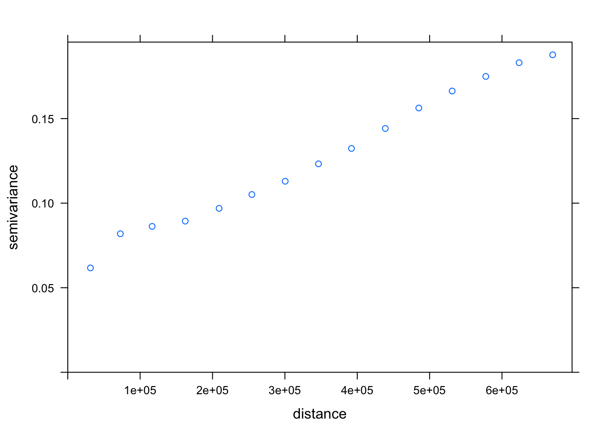

manuscript_gap_analysis
Rae
12/16/2018
knitr::opts_chunk$set(echo = TRUE)Setup
Load packages, set cache, define study area
if (!require(pacman)) install.packages("pacman")## Loading required package: pacmanlibrary(pacman)
p_load(
tidyverse, here, glue,
raster,
sdmpredictors, dismo,
deldir,
mapview,
tmap,
ggplot2,
rgdal,
gstat,
usdm,
knitr,
tmap,
rnaturalearth)
# custom R package: oatools
devtools::load_all(here("../oatools")) # for developing## Loading oatools## Warning in setup_ns_exports(path, export_all, export_imports): Objects
## listed as exports, but not present in namespace: find_gaps#library(oatools) # devtools::install_github("resilinseas/oatools") # for eventual production
# paths & variables ----
dir_data <- here("data")
dir_sdmdata_old <- here("data/sdmpredictors")
dir_cache <- here("cache")
dir_sdmdata <- here("cache/sdmpredictors")
SST_tif <- here("data/sst_mean.tif")
DO_tif <- here("data/do_mean.tif")
# reorganize dirs so "cache" is always local and ignored by git, vs all in "data" tracked by git & pushed to github
if (!dir.exists(dir_data)) dir.create(dir_data)
if (!dir.exists(dir_cache)) dir.create(dir_cache)
if (!dir.exists(dir_sdmdata) & dir.exists(dir_sdmdata_old))
file.rename(dir_sdmdata_old, dir_sdmdata)
if (!dir.exists(dir_sdmdata)) dir.create(dir_sdmdata)
list<- list_layers("Bio-ORACLE")
# extent of NE Pacific study area, for cropping rasters
ext_study <- extent(-500000, 340000, -580000, 1215000)
ext_study_alin <- extent(-6700000, 340000, -600000, 350000)
ext_study_juranek <- extent(-6700000, 340000, 150000, 1215000)
crs_study <- '+init=EPSG:6414'
ext_study_channelislands <- extent (0, 300000, -600000, -400000)
ext_study_pugetsound <- extent(-300000, -150000, 1000000, 1215000)
ext_study_oregoncoast <- extent(-500000, -200000, 500000, 900000)
# import shapefiles for cropping to coast
poly_coast<- readOGR(dsn=path.expand("/Users/raetaylor-burns/downloads/Export_Output_2"), layer="Export_Output_2")## OGR data source with driver: ESRI Shapefile
## Source: "/Users/raetaylor-burns/Downloads/Export_Output_2", layer: "Export_Output_2"
## with 52 features
## It has 55 fields
## Integer64 fields read as strings: OBJECTID POPULATION POP2010 WHITE BLACK AMERI_ES ASIAN HAWN_PI HISPANIC OTHER MULT_RACE MALES FEMALES AGE_UNDER5 AGE_5_9 AGE_10_14 AGE_15_19 AGE_20_24 AGE_25_34 AGE_35_44 AGE_45_54 AGE_55_64 AGE_65_74 AGE_75_84 AGE_85_UP HOUSEHOLDS HSEHLD_1_M HSEHLD_1_F MARHH_CHD MARHH_NO_C MHH_CHILD FHH_CHILD FAMILIES HSE_UNITS VACANT OWNER_OCC RENTER_OCCCanada<- readOGR(dsn=path.expand("/Users/raetaylor-burns/downloads/Canada"), layer="Canada")## OGR data source with driver: ESRI Shapefile
## Source: "/Users/raetaylor-burns/Downloads/Canada", layer: "Canada"
## with 13 features
## It has 2 fieldsstates<- readOGR(dsn=path.expand("/Users/raetaylor-burns/downloads/cb_2016_us_state_20m"), layer="cb_2016_us_state_20m")## OGR data source with driver: ESRI Shapefile
## Source: "/Users/raetaylor-burns/Downloads/cb_2016_us_state_20m", layer: "cb_2016_us_state_20m"
## with 52 features
## It has 9 fields
## Integer64 fields read as strings: ALAND AWATERpoly_coast <- spTransform(poly_coast, crs(crs_study))
Canada <- spTransform(Canada, crs(crs_study))
states <- spTransform(states, crs(crs_study))
# sea surface temperature
# devtools::load_all(here("../oatools")) # for use while developing
r_sst_min <- lyr_to_tif(
lyr = "BO_sstmin",
tif = here("data/sst_min.tif"),
crs = crs_study,
dir_sdm_cache = dir_sdmdata,
extent_crop = ext_study,
redo=T, fill_na=TRUE, fill_window=11)## lyr_to_tif() messages...## loading layer from sdmpredictors and projecting## Warning in rgdal::rawTransform(projto_int, projfrom, nrow(xy), xy[, 1], :
## 1834961 projected point(s) not finite## cropping raster to extent## filling in missing (NA) values with focal window## writing raster to tifr_sst_min_alin <- crop(r_sst_min, ext_study_alin)
r_sst_min_juranek <- crop(r_sst_min, ext_study_juranek)
n_na <- sum(is.na(raster::getValues(r_sst_min)))Create SST/DO min/max rasters from bio-oracle data
Min is used here to determine a worst case scenario for aragonite saturation state, and max is used with min to determine aragonite saturation state range
#sst max
r_sst_max <- lyr_to_tif(
lyr = "BO_sstmax",
tif = here("data/sst_min.tif"),
crs = crs_study,
dir_sdm_cache = dir_sdmdata,
extent_crop = ext_study,
redo=T, fill_na=TRUE, fill_window=11)## lyr_to_tif() messages...## loading layer from sdmpredictors and projecting## Warning in rgdal::rawTransform(projto_int, projfrom, nrow(xy), xy[, 1], :
## 1834961 projected point(s) not finite## cropping raster to extent## filling in missing (NA) values with focal window## writing raster to tifr_sst_max_alin <- crop(r_sst_max, ext_study_alin)
r_sst_max_juranek <- crop(r_sst_max, ext_study_juranek)
#do min
r_do_min <- lyr_to_tif(
lyr = "BO2_dissoxmin_bdmin",
tif = here("data/do_min.tif"),
crs = crs_study,
dir_sdm_cache = dir_sdmdata,
extent_crop = ext_study,
redo=T, fill_na=TRUE, fill_window=11)## lyr_to_tif() messages...## loading layer from sdmpredictors and projecting## Warning in rgdal::rawTransform(projto_int, projfrom, nrow(xy), xy[, 1], :
## 1834961 projected point(s) not finite## cropping raster to extent## filling in missing (NA) values with focal window## writing raster to tifr_do_min_alin <- crop(r_do_min, ext_study_alin)
r_do_min_juranek <- crop(r_do_min, ext_study_juranek)
r_do_max <- lyr_to_tif(
lyr = "BO2_dissoxmax_bdmin",
tif = here("data/do_max.tif"),
crs = crs_study,
dir_sdm_cache = dir_sdmdata,
extent_crop = ext_study,
redo=T, fill_na=TRUE, fill_window=11)## lyr_to_tif() messages...## loading layer from sdmpredictors and projecting## Warning in rgdal::rawTransform(projto_int, projfrom, nrow(xy), xy[, 1], :
## 1834961 projected point(s) not finite## cropping raster to extent## filling in missing (NA) values with focal window## writing raster to tifr_do_max_alin <- crop(r_do_max, ext_study_alin)
r_do_max_juranek <- crop(r_do_max, ext_study_juranek)Use Juranek 2009 model to create ocean acidification layer for the study region
#juranek aragonite
j0 = 9.242*10^-1
j1 = 4.492*10^-3
j2 = 9.40 * 10^-4
jo2r = 140
jtr = 8
juranek_arag <- j0 + j1 * (r_do_min_juranek-jo2r) + j2 * (r_do_min_juranek-jo2r) * (r_sst_min_juranek-jtr)Repeat using Alin 2012 model
#alin aragonite
a0 = 1.112
a1 = 9.59*10^-2
a2 = 3.54*10^-3
a3 = 5.91*10^-4
ao2r = 138.46
atr = 10.28
alin_arag <- a0 + a1 * (r_sst_min_alin-atr) + a2 * (r_do_min_alin-ao2r) + a3 * (r_sst_min_alin-atr) * (r_do_min_alin-ao2r)Combine model outputs
Here we see a zonal difference between the models, and a bit of a latitudinal difference, especially in the California Bight region
arag <- mosaic(alin_arag, juranek_arag, fun = mean)Create variograms for each of the models
aragdf <- as.data.frame(arag, xy = TRUE)
aragdf <- aragdf %>% #remove N/A values
mutate(layer=replace(layer, layer==-999.000, NA)) %>%
na.omit(aragdf)
coordinates(aragdf)<- ~ x + y #transform into spatial points
aragvar <- variogram(layer~1, aragdf)
aragfit<-fit.variogram(aragvar,model=vgm(nugget=0, psill=0.12,range=200000,model="Exp"))
plot(aragvar, aragfit)
Prep Inventory
These are the same steps from our GP paper, which we use to create an OA layer in which all the cells in our study site are assigned the aragonite saturation state measured at the nearest monitoring point.
# import inventory
inventory <- read_csv(here("data/inventory.csv"))
#remove non OAH focus entries
oahfocus <- subset(inventory, OAHFocus == "OA" | OAHFocus == "H" | OAHFocus == "OAH")
#quantify frequencies
unique(oahfocus$MeasFreq)
oahfocus$MeasFreq[oahfocus$MeasFreq =="Once"] <- 0
oahfocus$MeasFreq[oahfocus$MeasFreq == 10] <- 52560
oahfocus$MeasFreq[oahfocus$MeasFreq =="< 6 hours"] <- 1460
oahfocus$MeasFreq[oahfocus$MeasFreq == 60] <- 8760
oahfocus$MeasFreq[oahfocus$MeasFreq =="Daily"] <- 365
oahfocus$MeasFreq[oahfocus$MeasFreq ==30] <- 17520
oahfocus$MeasFreq[oahfocus$MeasFreq == 20] <- 26280
oahfocus$MeasFreq[oahfocus$MeasFreq == 15] <- 35040
oahfocus$MeasFreq[oahfocus$MeasFreq == 5] <- 105120
oahfocus$MeasFreq[oahfocus$MeasFreq == 6] <- 87600
oahfocus$MeasFreq[oahfocus$MeasFreq == 180] <- 2920
oahfocus$MeasFreq[oahfocus$MeasFreq == 2] <- 262800
oahfocus$MeasFreq[oahfocus$MeasFreq == 0.25] <- 2102400
oahfocus$MeasFreq[oahfocus$MeasFreq == 3] <- 175200
oahfocus$MeasFreq[oahfocus$MeasFreq == 1] <- 525600
oahfocus$MeasFreq[oahfocus$MeasFreq == 120] <- 2920
oahfocus$MeasFreq[oahfocus$MeasFreq == 360] <- 1460
oahfocus$MeasFreq[oahfocus$MeasFreq == 720] <- 730
oahfocus$MeasFreq[oahfocus$MeasFreq =="Quarterly"] <- 4
oahfocus$MeasFreq[oahfocus$MeasFreq =="Annual"] <- 1
oahfocus$MeasFreq[oahfocus$MeasFreq =="Monthly"] <- 12
oahfocus$MeasFreq[oahfocus$MeasFreq =="Semi-annual"] <- 2
oahfocus$MeasFreq[oahfocus$MeasFreq =="Bi-weekly"] <- 26
oahfocus$MeasFreq[oahfocus$MeasFreq =="Seasonally"] <- 1
oahfocus$MeasFreq[oahfocus$MeasFreq =="1/4 second"] <- 126144000
oahfocus$MeasFreq[oahfocus$MeasFreq =="Bi-monthly"] <- 6
oahfocus$MeasFreq[oahfocus$MeasFreq =="5 Years"] <- 0.2
oahfocus$MeasFreq[oahfocus$MeasFreq =="Bi-weekly"] <- 26
oahfocus$MeasFreq[oahfocus$MeasFreq =="Variable"] <- 0
oahfocus$MeasFreq[oahfocus$MeasFreq =="Decadal"] <- 0.1
oahfocus$MeasFreq[oahfocus$MeasFreq =="Biennial"] <- 0.5
oahfocus$MeasFreq[oahfocus$MeasFreq =="Weekly"] <- 52
oahfocus$MeasFreq[oahfocus$MeasFreq =="Triennial"] <- 0.33333
oahfocus$MeasFreq[oahfocus$MeasFreq =="Trimester"] <- 3
unique(oahfocus$MeasFreq)
#remove NA coordinates
oahfocus <- oahfocus[!is.na(oahfocus$Latitude), ]
oahfocus <- oahfocus[!is.na(oahfocus$Longitude), ]
#remove spaces and transform to numeric
gsub(" ", "", oahfocus$Latitude)
gsub(" ", "", oahfocus$Longitude)
gsub("'<ca>'", "", oahfocus$Longitude)
oahfocus$Longitude<-as.numeric(oahfocus$Longitude)
oahfocus$Latitude<-as.numeric(oahfocus$Latitude)
#subsets
carbcomplete<-subset(oahfocus, DisCrbPmtr>1 | ISCrbPmtr > 1)
incomplete <- subset(oahfocus, DisCrbPmtr<2 & ISCrbPmtr < 2 & EndYr == "Present")
highfrequency<-subset(oahfocus, MeasFreq > 364)
highfreqcarbcomplete<-subset(oahfocus, MeasFreq > 364 & DisCrbPmtr>1 | MeasFreq > 364 & ISCrbPmtr > 1)
lowfrequency <- subset(oahfocus, MeasFreq < 365 & EndYr == "Present" & AssetType == "Shoreside Sensor" | AssetType == "Mooring" | AssetType == "Sample Site" | AssetType == "Shoresidesensor")Make spatial points object from inventory coordinates and its subsets
# isolate coordinate columns
coords <- cbind.data.frame(oahfocus$Longitude, oahfocus$Latitude)
carbcompletecoords <- cbind.data.frame(carbcomplete$Longitude, carbcomplete$Latitude)
incompletecoords <- cbind.data.frame(incomplete$Longitude, incomplete$Latitude)
highfrequencycoords <- cbind.data.frame(highfrequency$Longitude, highfrequency$Latitude)
lowfrequencycoords <- cbind.data.frame(lowfrequency$Longitude, lowfrequency$Latitude)
highfreqcarbcompletecoords <- cbind.data.frame(highfreqcarbcomplete$Longitude, highfreqcarbcomplete$Latitude)
# remove duplicate locations
deduped.coords<-unique(coords)
deduped.carbcomplete <- unique(carbcompletecoords)
deduped.incomplete <- unique(incompletecoords)
deduped.highfrequency <- unique(highfrequencycoords)
deduped.lowfrequency <- unique(lowfrequencycoords)
deduped.highfreqcarbcomplete <- unique(highfreqcarbcompletecoords
)
# create spatial points objects
inventorycoords <- SpatialPoints(deduped.coords, CRS("+proj=longlat +ellps=WGS84"))
inventorycoords <- spTransform(inventorycoords, CRS('+init=EPSG:6414'))
carbcompletecoords <- SpatialPoints(deduped.carbcomplete, CRS("+proj=longlat +ellps=WGS84"))
carbcompletecoords <- spTransform(carbcompletecoords, CRS('+init=EPSG:6414'))
incompletecoords <- SpatialPoints(deduped.incomplete, CRS("+proj=longlat +ellps=WGS84"))
incompletecoords <- spTransform(incompletecoords, CRS('+init=EPSG:6414'))
highfreqcoords <- SpatialPoints(deduped.highfrequency, CRS("+proj=longlat +ellps=WGS84"))
highfreqcoords <- spTransform(highfreqcoords, CRS('+init=EPSG:6414'))
lowfreqcoords <- SpatialPoints(deduped.lowfrequency, CRS("+proj=longlat +ellps=WGS84"))
lowfreqcoords <- spTransform(lowfreqcoords, CRS('+init=EPSG:6414'))
highfreqcarbcompletecoords <- SpatialPoints(deduped.highfreqcarbcomplete, CRS("+proj=longlat +ellps=WGS84"))
highfreqcarbcompletecoords <- spTransform(highfreqcarbcompletecoords, CRS('+init=EPSG:6414'))# create voronoi polygons
vor <-voronoi(inventorycoords)
carbcompletevor <- voronoi(carbcompletecoords)
incompletevor <- voronoi(incompletecoords)
highfreqvor <- voronoi(highfreqcoords)
lowfreqvor <- voronoi(lowfreqcoords)
# rasterize polygons
vorraster<- rasterize(vor, r_sst_min, "id")
carbcompletevorraster<- rasterize(carbcompletevor, r_sst_min, "id")
incompletevorraster<- rasterize(incompletevor, r_sst_min, "id")
highfreqvorraster<- rasterize(highfreqvor, r_sst_min, "id")
lowfreqvorraster<- rasterize(lowfreqvor, r_sst_min, "id")Create OA layer
Here we assign each cell the aragonite value from the nearest monitoring site
#extract aragonite saturation state value for each monitoring site
sitearag<- raster::extract(arag, inventorycoords, method='simple', df=TRUE)
carbcompletesitearag<- raster::extract(arag, carbcompletecoords, method='simple', df=TRUE)
highfreqsitearag<- raster::extract(arag, highfreqcoords, method='simple', df=TRUE)
# rename column names of sitesstrange
colnames(sitearag)<-c("id", "Arag")
colnames(carbcompletesitearag)<-c("id", "Arag")
colnames(highfreqsitearag)<-c("id", "Arag")
# substitute polygon id for monitoring site sea surface temerature of that polygon
polygonarag<-subs(vorraster, sitearag, by="id", which="Arag", subsWithNA=FALSE)
carbcompletepolygonarag <- subs(carbcompletevorraster, carbcompletesitearag, by="id", which="Arag", subsWithNA=FALSE)
highfreqpolygonarag <- subs(highfreqvorraster, highfreqsitearag, by="id", which="Arag", subsWithNA=FALSE)Determine semivariance
#vij = (xi-xj)^2/2
vij<- (arag-polygonarag)^2/2
carbcompletevij <- (arag-carbcompletepolygonarag)^2/2
highfreqvij <- (arag-highfreqpolygonarag)^2/2Find Oceanographic distance
This is done as an alternative to predict/uniroot since I hit a roadblock there. I chose the Alin variogram, and created a linear model that describes the relationship between distance and semivariance, and applied it to the semivariance rasters
plot(aragvar, aragfit)
#variogram saturates at ~0.12
#sill = 0.12
#range = 200000
slope = 200000/0.12
oceanographicdistance = slope * vij
carbcompleteoceanographicdistance = slope * carbcompletevij
highfreqoceanographicdistance = slope * highfreqvijGeographic distance
Determine geographic distance from the nearest monitoring point
distance<-distanceFromPoints(oceanographicdistance, inventorycoords)
carbcompletedistance<-distanceFromPoints(carbcompleteoceanographicdistance, carbcompletecoords)
highfreqdistance<-distanceFromPoints(highfreqoceanographicdistance, highfreqcoords)Temporal Variation
This step determines the range in aragonite saturation state across the region by using max values of T and DO to find the max aragonite saturation state, and min values to find the min aragonite saturation state. The difference is the range. I also normalized this step. One problem I have here is that due to the coefficients (atr and ao2r) there are some places in the study region where using the max values of do and sst gives you are smaller value for aragonite saturation state than the min values do. This is because when you use the max values, for some raster cells the a3 term has a positive component and a negative component leading to a negative sign on the a3 term, whereas when you use the min values those raster cells have two negative components, leading to a positive sign on the a3 term. So I used the abs value of the range, but I’m not sure this makes sense, and maybe there is a better way to find the range. Using the range rasters for SST/DO is a possibility, but that method yields a really different result.
alinaragmax <- a0 + a1 * (r_sst_max_alin-atr) + a2 * (r_do_max_alin-ao2r) + a3 * (r_sst_max_alin-atr) * (r_do_max_alin-ao2r)
juranekaragmax <- j0 + j1 * (r_do_max_juranek-jo2r) + j2 * (r_do_max_juranek-jo2r) * (r_sst_max_juranek-jtr)
#alinaragrange <- alinaragmax-alin_arag
#juranekaragrange <- juranekaragmax-juranek_arag
alinaragrange <- a1 * (r_sst_max-r_sst_min) + a2 * (r_do_max-r_do_min) + a3 * ( (r_sst_max-r_sst_min)*(r_do_min + r_do_min - ao2r) + (r_do_max-r_do_min)*(r_sst_min - atr))
alinaragrange <- crop(alinaragrange, ext_study_alin)
juranekaragrange <- j1 * (r_do_max-r_do_min) + j2 * (r_do_max-r_do_min) + a3 * ( (r_sst_max-r_sst_min)*(r_do_min + r_do_min - jo2r) + (r_do_max-r_do_min)*(r_sst_min - jtr))
juranekaragrange <- crop(juranekaragrange, ext_study_juranek)
aragrange <- mosaic(alinaragrange, juranekaragrange, fun = mean)
aragrange <- aragrange/maxValue(aragrange)Find Gaps
Here I used the euclidean distance to combine the oceanographic distance and the geographic distance. I used a weighting factor of on the oceanographic distance, which is the max value of distance / max value of oceanographic distance, so that the two parameters combine equally. I multiplied each distance by the range of the aragonite saturation state, such that locations with equal distances will be “gappier” if their aragonite saturation state has a large range. This is to account for temporal variation.
#calculate gaps
weight = maxValue(distance)/maxValue(oceanographicdistance)
#gap<-((aragrange)^2*sqrt((distance)^2+(weight*oceanographicdistance)^2))/1000
gap<-(sqrt((distance)^2+(weight*oceanographicdistance)^2))/1000
#carbcompletegap<-((aragrange)^2*sqrt((carbcompletedistance)^2+(weight*carbcompleteoceanographicdistance)^2))/1000
carbcompletegap<-(sqrt((carbcompletedistance)^2+(weight*carbcompleteoceanographicdistance)^2))/1000
#highfreqgap<-((aragrange)^2*sqrt((highfreqdistance)^2+(weight*highfreqoceanographicdistance)^2))/1000
highfreqgap<-(sqrt((highfreqdistance)^2+(weight*highfreqoceanographicdistance)^2))/1000Create Figures
Visualize gaps using tmap
tmap_mode("view")## tmap mode set to interactive viewingsetwd("/Users/raetaylor-burns/downloads")
pal <- colorRampPalette(c("red", "white", "royalblue2"))
aragonite <- tm_shape(arag)+
tm_raster(palette = pal(10), colorNA = NULL, alpha = 1, auto.palette.mapping = FALSE, legend.show = FALSE)+
tm_layout(main.title = "Aragonite Saturation State", main.title.size = 1, bg.color = "white", main.title.position = c("center", "top"), fontfamily = "serif", fontface = "bold")+
tm_shape(poly_coast)+
tm_polygons()+
tm_shape(Canada)+
tm_polygons()+
tm_grid(projection = "longlat", lwd = 0.1, n.x = 3, n.y = 6, labels.inside.frame = FALSE, labels.size = 0.6)## Warning: The argument auto.palette.mapping is deprecated. Please use
## midpoint for numeric data and stretch.palette for categorical data to
## control the palette mapping. tmap_options(max.raster = c(plot = 45955000, view = 45955000))
aragonitelegend <- tm_shape(arag)+
tm_raster(title = "Aragonite Saturation State", palette = pal(10), colorNA = NULL, alpha = 1, auto.palette.mapping = FALSE, legend.show = TRUE)+
tm_layout(main.title = "Aragonite Saturation State", main.title.size = 1, bg.color = "white", main.title.position = c("center", "top"), fontfamily = "serif", fontface = "bold", legend.only = TRUE, legend.just = "center")+
tm_shape(poly_coast)+
tm_polygons()+
tm_shape(Canada)+
tm_polygons()+
tm_grid(projection = "longlat", lwd = 0.1, n.x = 3, n.y = 6, labels.inside.frame = FALSE, labels.size = 0.6)## Warning: The argument auto.palette.mapping is deprecated. Please use
## midpoint for numeric data and stretch.palette for categorical data to
## control the palette mapping. tmap_options(max.raster = c(plot = 45955000, view = 45955000))
tmap_save(aragonite, "aragonite.png", width = 3000, height = 4000, dpi = 500)## Map saved to /Users/raetaylor-burns/Downloads/aragonite.png## Resolution: 3000 by 4000 pixels## Size: 6 by 8 inches (500 dpi)tmap_save(aragonitelegend, "aragonitelegend.png", width = 3000, height = 4000, dpi = 500)## Map saved to /Users/raetaylor-burns/Downloads/aragonitelegend.png## Resolution: 3000 by 4000 pixels## Size: 6 by 8 inches (500 dpi)pal <- colorRampPalette(c("royalblue1", "white", "red"))
aragonitediscrepancy <- tm_shape(abs(arag-polygonarag))+
tm_raster(palette = pal(10), colorNA = NULL, alpha = 1, auto.palette.mapping = FALSE, legend.show = FALSE)+
tm_layout(main.title = "Aragonite Saturation State Discrepancy", main.title.size = 1, bg.color = "white", main.title.position = c("center", "top"), fontfamily = "serif", fontface = "bold")+
tm_shape(poly_coast)+
tm_polygons()+
tm_shape(Canada)+
tm_polygons()+
tm_grid(projection = "longlat", lwd = 0.1, n.x = 3, n.y = 6, labels.inside.frame = FALSE, labels.size = 0.6)+
tm_shape(inventorycoords)+
tm_dots(size = 0.02)## Warning: The argument auto.palette.mapping is deprecated. Please use
## midpoint for numeric data and stretch.palette for categorical data to
## control the palette mapping. tmap_options(max.raster = c(plot = 45955000, view = 45955000))
aragonitediscrepancylegend <- tm_shape(abs(arag-polygonarag))+
tm_raster(title = "Aragonite Saturation State", palette = pal(10), colorNA = NULL, alpha = 1, auto.palette.mapping = FALSE, legend.show = TRUE)+
tm_layout(main.title = "Aragonite Saturation State", main.title.size = 1, bg.color = "white", main.title.position = c("center", "top"), fontfamily = "serif", fontface = "bold", legend.only = TRUE, legend.just = "center")+
tm_shape(poly_coast)+
tm_polygons()+
tm_shape(Canada)+
tm_polygons()+
tm_grid(projection = "longlat", lwd = 0.1, n.x = 3, n.y = 6, labels.inside.frame = FALSE, labels.size = 0.6)## Warning: The argument auto.palette.mapping is deprecated. Please use
## midpoint for numeric data and stretch.palette for categorical data to
## control the palette mapping. tmap_options(max.raster = c(plot = 45955000, view = 45955000))
aragoniterange <- tm_shape(abs(aragrange))+
tm_raster(palette = pal(10), colorNA = NULL, alpha = 1, auto.palette.mapping = FALSE, legend.show = FALSE)+
tm_layout(main.title = "Aragonite Saturation State Range", main.title.size = 1, bg.color = "white", main.title.position = c("center", "top"), fontfamily = "serif", fontface = "bold")+
tm_shape(poly_coast)+
tm_polygons()+
tm_shape(Canada)+
tm_polygons()+
tm_grid(projection = "longlat", lwd = 0.1, n.x = 3, n.y = 6, labels.inside.frame = FALSE, labels.size = 0.6)+
tm_shape(inventorycoords)+
tm_dots(size = 0.02)## Warning: The argument auto.palette.mapping is deprecated. Please use
## midpoint for numeric data and stretch.palette for categorical data to
## control the palette mapping. tmap_options(max.raster = c(plot = 45955000, view = 45955000))
aragoniterangelegend <- tm_shape(aragrange)+
tm_raster(title = "Aragonite Saturation State Range", palette = pal(10), colorNA = NULL, alpha = 1, auto.palette.mapping = FALSE, legend.show = TRUE)+
tm_layout(main.title = "Aragonite Saturation State Range", main.title.size = 1, bg.color = "white", main.title.position = c("center", "top"), fontfamily = "serif", fontface = "bold", legend.only = TRUE, legend.just = "center")+
tm_shape(poly_coast)+
tm_polygons()+
tm_shape(Canada)+
tm_polygons()+
tm_grid(projection = "longlat", lwd = 0.1, n.x = 3, n.y = 6, labels.inside.frame = FALSE, labels.size = 0.6)## Warning: The argument auto.palette.mapping is deprecated. Please use
## midpoint for numeric data and stretch.palette for categorical data to
## control the palette mapping. tmap_options(max.raster = c(plot = 45955000, view = 45955000))
oceanographicdist <- tm_shape(oceanographicdistance)+
tm_raster(palette = pal(10), colorNA = NULL, alpha = 1, auto.palette.mapping = FALSE, legend.show = FALSE)+
tm_layout(main.title = "Oceanographic Distance", main.title.size = 1, bg.color = "white", main.title.position = c("center", "top"), fontfamily = "serif", fontface = "bold")+
tm_shape(poly_coast)+
tm_polygons()+
tm_shape(Canada)+
tm_polygons()+
tm_grid(projection = "longlat", lwd = 0.1, n.x = 3, n.y = 6, labels.inside.frame = FALSE, labels.size = 0.6)+
tm_shape(inventorycoords)+
tm_dots(size = 0.02)## Warning: The argument auto.palette.mapping is deprecated. Please use
## midpoint for numeric data and stretch.palette for categorical data to
## control the palette mapping. tmap_options(max.raster = c(plot = 45955000, view = 45955000))
oceanographicdistlegend <- tm_shape(oceanographicdistance)+
tm_raster(title = "Oceanographic Distance", palette = pal(10), colorNA = NULL, alpha = 1, auto.palette.mapping = FALSE, legend.show = TRUE)+
tm_layout(main.title = "Oceanographic Distance", main.title.size = 1, bg.color = "white", main.title.position = c("center", "top"), fontfamily = "serif", fontface = "bold", legend.only = TRUE, legend.just = "center")+
tm_shape(poly_coast)+
tm_polygons()+
tm_shape(Canada)+
tm_polygons()+
tm_grid(projection = "longlat", lwd = 0.1, n.x = 3, n.y = 6, labels.inside.frame = FALSE, labels.size = 0.6)## Warning: The argument auto.palette.mapping is deprecated. Please use
## midpoint for numeric data and stretch.palette for categorical data to
## control the palette mapping. tmap_options(max.raster = c(plot = 45955000, view = 45955000))
tmap_save(aragonitediscrepancy, "aragonitediscrepancy.png", width = 3000, height = 4000, dpi = 500)## Map saved to /Users/raetaylor-burns/Downloads/aragonitediscrepancy.png## Resolution: 3000 by 4000 pixels## Size: 6 by 8 inches (500 dpi)tmap_save(aragonitediscrepancylegend, "aragonitediscrepancylegend.png", width = 3000, height = 4000, dpi = 500)## Map saved to /Users/raetaylor-burns/Downloads/aragonitediscrepancylegend.png## Resolution: 3000 by 4000 pixels## Size: 6 by 8 inches (500 dpi)tmap_save(aragoniterange, "aragoniterange.png", width = 3000, height = 4000, dpi = 500)## Map saved to /Users/raetaylor-burns/Downloads/aragoniterange.png## Resolution: 3000 by 4000 pixels## Size: 6 by 8 inches (500 dpi)tmap_save(aragoniterangelegend, "aragoniterangelegend.png", width = 3000, height = 4000, dpi = 500)## Variable "layer" contains positive and negative values, so midpoint is set to 0. Set midpoint = NA to show the full spectrum of the color palette.## Map saved to /Users/raetaylor-burns/Downloads/aragoniterangelegend.png## Resolution: 3000 by 4000 pixels## Size: 6 by 8 inches (500 dpi)tmap_save(oceanographicdist, "oceanographicdistance.png", width = 3000, height = 4000, dpi = 500)## Map saved to /Users/raetaylor-burns/Downloads/oceanographicdistance.png## Resolution: 3000 by 4000 pixels## Size: 6 by 8 inches (500 dpi)tmap_save(oceanographicdistlegend, "oceanographicdistancelegend.png", width = 3000, height = 4000, dpi = 500)## Map saved to /Users/raetaylor-burns/Downloads/oceanographicdistancelegend.png## Resolution: 3000 by 4000 pixels## Size: 6 by 8 inches (500 dpi)pal <- colorRampPalette(c("royalblue2", "white", "red"))
fullgap <- tm_shape(gap)+
tm_raster(palette = pal(10), colorNA = NULL, alpha = 0.8, auto.palette.mapping = FALSE, legend.show = FALSE, breaks = c(0, 150, 300, 450, 600, 750))+
tm_layout(main.title = "Effective Distance to Nearest Monitoring (km)", fontfamily = "serif", fontface = "bold", main.title.size = 1)+
tm_shape(poly_coast)+
tm_polygons()+
tm_shape(Canada)+
tm_polygons()+
tm_grid(projection = "longlat", lwd = 0.1, n.x = 3, n.y = 6, labels.inside.frame = FALSE, labels.size = 0.6)+
tmap_options(max.raster = c(plot = 45955000, view = 45955000))## Warning: The argument auto.palette.mapping is deprecated. Please use
## midpoint for numeric data and stretch.palette for categorical data to
## control the palette mapping.channelislandfullgap <- crop(gap, ext_study_channelislands)
channelislandgap <- tm_shape(channelislandfullgap)+
tm_raster(palette = pal(10), colorNA = NULL, alpha = 0.8, auto.palette.mapping = FALSE, legend.show = FALSE, breaks = c(0, 150, 300, 450, 600, 750))+
tm_layout(fontfamily = "serif", fontface = "bold")+
tm_shape(poly_coast)+
tm_polygons()+
tm_shape(Canada)+
tm_polygons()+
tm_shape(inventorycoords)+
tm_dots(size = 0.05)+
tm_grid(projection = "longlat", lwd = 0.1, n.x = 3, n.y = 6, labels.inside.frame = FALSE, labels.size = 0.6)+
tmap_options(max.raster = c(plot = 45955000, view = 45955000))## Warning: The argument auto.palette.mapping is deprecated. Please use
## midpoint for numeric data and stretch.palette for categorical data to
## control the palette mapping.pugetsoundfullgap <- crop(gap, ext_study_pugetsound)
pugetsoundgap <- tm_shape(pugetsoundfullgap)+
tm_raster(palette = pal(10), colorNA = NULL, alpha = 0.8, auto.palette.mapping = FALSE, legend.show = FALSE, breaks = c(0, 150, 300, 450, 600, 750))+
tm_layout(fontfamily = "serif", fontface = "bold")+
tm_shape(poly_coast)+
tm_polygons()+
tm_shape(Canada)+
tm_polygons()+
tm_shape(inventorycoords)+
tm_dots(size = 0.05)+
tm_grid(projection = "longlat", lwd = 0.1, n.x = 3, n.y = 6, labels.inside.frame = FALSE, labels.size = 0.6)+
tmap_options(max.raster = c(plot = 45955000, view = 45955000))## Warning: The argument auto.palette.mapping is deprecated. Please use
## midpoint for numeric data and stretch.palette for categorical data to
## control the palette mapping.oregoncoastfullgap <- crop(gap, ext_study_oregoncoast)
oregongap <- tm_shape(oregoncoastfullgap)+
tm_raster(palette = pal(10), colorNA = NULL, alpha = 0.8, auto.palette.mapping = FALSE, legend.show = FALSE, breaks = c(0, 150, 300, 450, 600, 750))+
tm_layout(fontfamily = "serif", fontface = "bold")+
tm_shape(poly_coast)+
tm_polygons()+
tm_shape(Canada)+
tm_polygons()+
tm_shape(inventorycoords)+
tm_dots(size = 0.05)+
tm_grid(projection = "longlat", lwd = 0.1, n.x = 3, n.y = 6, labels.inside.frame = FALSE, labels.size = 0.6)+
tmap_options(max.raster = c(plot = 45955000, view = 45955000))## Warning: The argument auto.palette.mapping is deprecated. Please use
## midpoint for numeric data and stretch.palette for categorical data to
## control the palette mapping.gaplegend <- tm_shape(gap)+
tm_raster(title = "Aragonite Saturation State", palette = pal(10), colorNA = NULL, alpha = 1, auto.palette.mapping = FALSE, legend.show = TRUE)+
tm_layout(main.title = "Aragonite Saturation State", main.title.size = 1, bg.color = "white", main.title.position = c("center", "top"), fontfamily = "serif", fontface = "bold", legend.only = TRUE, legend.just = "center")+
tm_shape(poly_coast)+
tm_polygons()+
tm_shape(Canada)+
tm_polygons()+
tm_grid(projection = "longlat", lwd = 0.1, n.x = 3, n.y = 6, labels.inside.frame = FALSE, labels.size = 0.6)## Warning: The argument auto.palette.mapping is deprecated. Please use
## midpoint for numeric data and stretch.palette for categorical data to
## control the palette mapping. tmap_options(max.raster = c(plot = 45955000, view = 45955000))
tmap_save(fullgap, "gap.png", width = 2000, height = 4000, dpi = 500)## Map saved to /Users/raetaylor-burns/Downloads/gap.png## Resolution: 2000 by 4000 pixels## Size: 4 by 8 inches (500 dpi)tmap_save(channelislandgap, "channelislandgap.png", width = 3800, height = 2500, dpi = 500)## Map saved to /Users/raetaylor-burns/Downloads/channelislandgap.png## Resolution: 3800 by 2500 pixels## Size: 7.6 by 5 inches (500 dpi)tmap_save(pugetsoundgap, "pugetsoundgap.png", width = 3800, height = 2500, dpi = 500)## Map saved to /Users/raetaylor-burns/Downloads/pugetsoundgap.png## Resolution: 3800 by 2500 pixels## Size: 7.6 by 5 inches (500 dpi)tmap_save(oregongap, "oregongap.png", width = 3800, height = 2500, dpi = 500)## Map saved to /Users/raetaylor-burns/Downloads/oregongap.png## Resolution: 3800 by 2500 pixels## Size: 7.6 by 5 inches (500 dpi)tmap_save(gaplegend, "gaplegend.png", width = 3000, height = 2000, dpi = 500)## Map saved to /Users/raetaylor-burns/Downloads/gaplegend.png## Resolution: 3000 by 2000 pixels## Size: 6 by 4 inches (500 dpi)#carbonate complete inventory gaps
ccgap <- tm_shape(carbcompletegap)+
tm_raster(palette = pal(10), colorNA = NULL, alpha = 0.8, breaks = c(0, 150, 300, 450, 600, 750), legend.show = FALSE)+
tm_layout(main.title = "Effective Distance to Nearest Aragonite Monitoring (km)", fontfamily = "serif", fontface = "bold", main.title.size = 1)+
tm_shape(poly_coast)+
tm_polygons()+
tm_shape(Canada)+
tm_polygons()+
tm_grid(projection = "longlat", lwd = 0.1, n.x = 3, n.y = 6, labels.inside.frame = FALSE, labels.size = 0.6)+
tmap_options(max.raster = c(plot = 45955000, view = 45955000))
channelislandcarbcompgap <- crop(carbcompletegap, ext_study_channelislands)
channelislandccgap <- tm_shape(channelislandcarbcompgap)+
tm_raster(palette = pal(10), colorNA = NULL, alpha = 0.8, auto.palette.mapping = FALSE, legend.show = FALSE, breaks = c(0, 150, 300, 450, 600, 750))+
tm_layout()+
tm_shape(poly_coast)+
tm_polygons()+
tm_shape(Canada)+
tm_polygons()+
tm_shape(incompletecoords)+
tm_dots(size = 0.05)+
tmap_options(max.raster = c(plot = 45955000, view = 45955000))## Warning: The argument auto.palette.mapping is deprecated. Please use
## midpoint for numeric data and stretch.palette for categorical data to
## control the palette mapping.pugetsoundcarbcompgap <- crop(carbcompletegap, ext_study_pugetsound)
pugetsoundccgap <- tm_shape(pugetsoundcarbcompgap)+
tm_raster(palette = pal(10), colorNA = NULL, alpha = 0.8, auto.palette.mapping = FALSE, legend.show = FALSE, breaks = c(0, 150, 300, 450, 600, 750))+
tm_layout()+
tm_shape(poly_coast)+
tm_polygons()+
tm_shape(Canada)+
tm_polygons()+
tm_shape(incompletecoords)+
tm_dots(size = 0.05)+
tmap_options(max.raster = c(plot = 45955000, view = 45955000))## Warning: The argument auto.palette.mapping is deprecated. Please use
## midpoint for numeric data and stretch.palette for categorical data to
## control the palette mapping.oregoncoastcarbcompgap <- crop(carbcompletegap, ext_study_oregoncoast)
oregonccgap <- tm_shape(oregoncoastcarbcompgap)+
tm_raster(palette = pal(10), colorNA = NULL, alpha = 0.8, auto.palette.mapping = FALSE, legend.show = FALSE, breaks = c(0, 150, 300, 450, 600, 750))+
tm_layout()+
tm_shape(poly_coast)+
tm_polygons()+
tm_shape(Canada)+
tm_polygons()+
tm_shape(incompletecoords)+
tm_dots(size = 0.05)+
tmap_options(max.raster = c(plot = 45955000, view = 45955000))## Warning: The argument auto.palette.mapping is deprecated. Please use
## midpoint for numeric data and stretch.palette for categorical data to
## control the palette mapping.tmap_save(ccgap, "ccgaps.png", width = 3000, height = 4000, dpi = 500)## Map saved to /Users/raetaylor-burns/Downloads/ccgaps.png## Resolution: 3000 by 4000 pixels## Size: 6 by 8 inches (500 dpi)tmap_save(channelislandccgap, "channelislandccgap.png", width = 3800, height = 2500, dpi = 500)## Map saved to /Users/raetaylor-burns/Downloads/channelislandccgap.png## Resolution: 3800 by 2500 pixels## Size: 7.6 by 5 inches (500 dpi)tmap_save(pugetsoundccgap, "pugetsoundccgap.png", width = 3800, height = 2500, dpi = 500)## Map saved to /Users/raetaylor-burns/Downloads/pugetsoundccgap.png## Resolution: 3800 by 2500 pixels## Size: 7.6 by 5 inches (500 dpi)tmap_save(oregonccgap, "oregonccgap.png", width = 3800, height = 2500, dpi = 500)## Map saved to /Users/raetaylor-burns/Downloads/oregonccgap.png## Resolution: 3800 by 2500 pixels## Size: 7.6 by 5 inches (500 dpi)# high frequency inventory gaps
highfreqgap <- crop(highfreqgap, ext_study)
hfgap <- tm_shape(highfreqgap)+
tm_raster(palette = pal(10), colorNA = NULL, alpha = 0.8, auto.palette.mapping = FALSE, breaks = c(0, 150, 300, 450, 600, 750), legend.show = FALSE)+
tm_layout(main.title = "Effective Distance to Nearest Daily Monitoring (km)", fontfamily = "serif", fontface = "bold", main.title.size = 1)+
tm_shape(poly_coast)+
tm_polygons()+
tm_shape(Canada)+
tm_polygons()+
tm_grid(projection = "longlat", lwd = 0.1, n.x = 3, n.y = 6, labels.inside.frame = FALSE, labels.size = 0.6)+
tmap_options(max.raster = c(plot = 45955000, view = 45955000))## Warning: The argument auto.palette.mapping is deprecated. Please use
## midpoint for numeric data and stretch.palette for categorical data to
## control the palette mapping.channelislandhighfreqgap <- crop(highfreqgap, ext_study_channelislands)
channelislandhfgap <- tm_shape(channelislandhighfreqgap)+
tm_raster(palette = pal(10), colorNA = NULL, alpha = 0.8, auto.palette.mapping = FALSE, legend.show = FALSE, breaks = c(0, 150, 300, 450, 600, 750))+
tm_layout()+
tm_shape(poly_coast)+
tm_polygons()+
tm_shape(Canada)+
tm_polygons()+
tm_shape(lowfreqcoords)+
tm_dots(size = 0.05)+
tmap_options(max.raster = c(plot = 45955000, view = 45955000))## Warning: The argument auto.palette.mapping is deprecated. Please use
## midpoint for numeric data and stretch.palette for categorical data to
## control the palette mapping.pugetsoundhighfreqgap <- crop(highfreqgap, ext_study_pugetsound)
pugetsoundhfgap <- tm_shape(pugetsoundhighfreqgap)+
tm_raster(palette = pal(10), colorNA = NULL, alpha = 0.8, auto.palette.mapping = FALSE, legend.show = FALSE, breaks = c(0, 150, 300, 450, 600, 750))+
tm_layout()+
tm_shape(poly_coast)+
tm_polygons()+
tm_shape(Canada)+
tm_polygons()+
tm_shape(lowfreqcoords)+
tm_dots(size = 0.05)+
tmap_options(max.raster = c(plot = 45955000, view = 45955000))## Warning: The argument auto.palette.mapping is deprecated. Please use
## midpoint for numeric data and stretch.palette for categorical data to
## control the palette mapping.oregoncoasthighfreqgap <- crop(highfreqgap, ext_study_oregoncoast)
oregonhfgap <- tm_shape(oregoncoasthighfreqgap)+
tm_raster(palette = pal(10), colorNA = NULL, alpha = 0.8, auto.palette.mapping = FALSE, legend.show = FALSE, breaks = c(0, 150, 300, 450, 600, 750))+
tm_layout()+
tm_shape(poly_coast)+
tm_polygons()+
tm_shape(Canada)+
tm_polygons()+
tm_shape(lowfreqcoords)+
tm_dots(size = 0.05)+
tmap_options(max.raster = c(plot = 45955000, view = 45955000))## Warning: The argument auto.palette.mapping is deprecated. Please use
## midpoint for numeric data and stretch.palette for categorical data to
## control the palette mapping.tmap_save(hfgap, "hfgaps.png", width = 4000, height = 4000, dpi = 500)## Map saved to /Users/raetaylor-burns/Downloads/hfgaps.png## Resolution: 4000 by 4000 pixels## Size: 8 by 8 inches (500 dpi)tmap_save(channelislandhfgap, "channelislandhfgap.png", width = 3800, height = 2500, dpi = 500)## Map saved to /Users/raetaylor-burns/Downloads/channelislandhfgap.png## Resolution: 3800 by 2500 pixels## Size: 7.6 by 5 inches (500 dpi)tmap_save(pugetsoundhfgap, "pugetsoundhfgap.png", width = 3800, height = 2500, dpi = 500)## Map saved to /Users/raetaylor-burns/Downloads/pugetsoundhfgap.png## Resolution: 3800 by 2500 pixels## Size: 7.6 by 5 inches (500 dpi)tmap_save(oregonhfgap, "oregonhfgap.png", width = 3800, height = 2500, dpi = 500)## Map saved to /Users/raetaylor-burns/Downloads/oregonhfgap.png## Resolution: 3800 by 2500 pixels## Size: 7.6 by 5 inches (500 dpi)